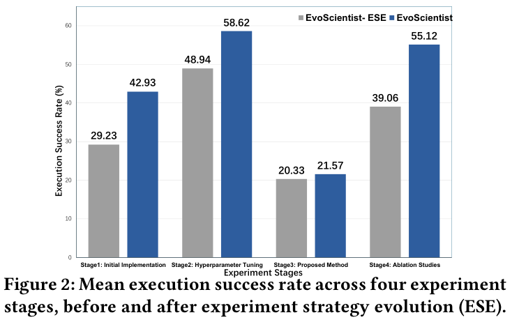

科研经验的价值，经常体现在下一次研究中：哪些方向值得继续，哪些问题曾经导致失败，哪些工程做法可以直接复用。这篇论文围绕这一点，尝试让科研智能体把研究过程中的经验保存下来，再用于后续任务。
本文解读 Yougang Lyu 等人的 EvoScientist: Towards Multi-Agent Evolving AI Scientists for End-to-End Scientific Discovery，依据 arXiv v2，更新于 2026 年 10 月 5 日。
本文最值得关注的设计，是把“研究方向的经验”和“实验执行的经验”分别存储，并让实验结果反过来影响未来选题。 实验支持这种设计具有一定价值，同时也暴露出一个明显瓶颈：复用工程经验带来的提升，尚未充分转化为实现新方法的能力。
一、课题解读：自主科研系统怎样从经历中学习
假设一个研究团队准备改进模型在低资源数据上的表现。团队需要查阅文献、形成假设、设计实验、编写代码，再根据结果决定下一步。
完成一次研究之后，通常会留下两类经验。第一类涉及研究判断：某种假设需要什么前提，某个方向为什么值得尝试，一次负面结果究竟否定了什么。第二类涉及实验执行：数据怎样处理，训练怎样保持稳定，某种报错怎样解决，哪些配置适用于当前资源。
自主科研的一个重要问题，就是如何让这些经验持续影响之后的行动。只有保存日志还不够：系统还需要从日志中提取有用内容，在合适的任务中找到它，并判断它是否仍然适用。
因此，评价这类系统至少需要区分三个层次：它能否提出有价值的方案，能否把方案落实成有效实验，以及过去的经历能否改善未来表现。
二、相关文献解读：从组织科研流程到复用研究经验
下面四项工作，分别提供了理解这篇论文的几个入口。
| 工作 | 主要探索 | 与本文的联系 |
|---|---|---|
| AI Scientist-v2 | 用智能体树搜索组织实验探索，连接想法、实验、分析与写作 | 提供完整科研流程与实验搜索的基础 |
| AI co-scientist | 通过生成、批评、比较和改进来发展研究假设 | 提供候选想法迭代与锦标赛筛选的思路 |
| Reflexion | 将任务反馈转为语言反思，保存后指导后续尝试 | 说明行为可以通过文本经验得到调整 |
| Agent Workflow Memory | 从过去的执行经历中归纳可复用流程 | 说明执行轨迹可以转化为后续行动的资源 |
这些工作分别推进了研究流程自动化、想法搜索和经验复用。EvoScientist 将它们连接起来，重点处理两个环节：研究者如何利用过去的方向判断，以及工程师如何利用过去的执行经验。
它还增加了一条重要反馈路径：实验失败之后，经验会进入研究方向记忆，影响之后提出什么方案。原论文第 2—3 节。
三、研究问题解读：论文实际检验了什么
作者在第 4.1 节明确提出四个研究问题，下面按阅读需要转述：
- 想法质量： 系统提出的研究想法，在新颖性、可行性、相关性和清晰度上表现如何？
- 执行可靠性： 系统能否生成并成功执行实验代码？
- 完整研究产出： 系统能否从想法走到完整论文，并获得同行评审认可？
- 演化机制的贡献： 从历史经验中更新策略，是否确实改善了想法质量？
这四个问题使用了不同评价方式。想法质量来自模型和专家的判断，代码能力来自运行结果，完整产出则通过投稿案例评价。阅读时需要保留这些区别。原论文第 4 节。
四、方法解读：经验怎样进入下一次研究
第一步：检索方向经验，生成候选想法
系统首先接收用户研究目标，例如希望解决哪一类模型或任务中的问题。
Researcher Agent，简称 RA，从文献和长期记忆中获得参考信息，再提出候选想法。这里的长期记忆叫作 Ideation Memory，研究构思记忆，同时包含有潜力的方向和过去失败的方向。
候选想法通过“提出—评审—修改”的树搜索继续发展。每个节点保存一个想法及其评审反馈，后续分支根据反馈生成修改方案。
论文实验用 Semantic Scholar 检索文献，用 Gemini-2.5-Pro 生成想法。方向记忆用 mxbai-embed-large 编码，按与研究目标的余弦相似度选出 2 条。构思树最多搜索 21 个候选，配置 3 个并行工作进程。构思检索与搜索 · 实验配置
第二步：通过比较选出研究提案
系统用基于 Elo 评分的锦标赛比较候选想法，考虑新颖性、可行性、相关性和清晰度。
可以把它理解为：让候选方案两两比较，根据比较结果更新排名。排名第一的想法被扩展成完整研究提案，包括背景、相关工作、方法、实验计划和预期结果；前三名则用于总结潜在研究方向。
这里需要注意：在想法比较中排名靠前，代表它值得进一步验证；它的科学有效性仍然要由实验检查。
第三步：检索工程经验，执行四阶段实验
完整提案交给 Engineer Agent，简称 EA。
EA 检索 Experimentation Memory，实验记忆，获得与当前提案相关的数据处理和模型训练策略，然后依次推进四个阶段：
| 阶段 | 主要工作 |
|---|---|
| 初始实现 | 建立可运行的初始实验代码 |
| 超参数调整 | 改进初始配置 |
| 提出的方法 | 实现研究提案中的新方法 |
| 消融实验 | 检查方法组件的贡献 |
每个阶段内部都有代码搜索、执行和修订。系统记录代码、运行状态、日志和评价指标，并选取表现最好的实现继续推进。
EA 用 Claude-4.5-Haiku 生成实验代码，配置 4 个并行工作进程。四个阶段的尝试上限分别是 20、12、12、18。检索键也随阶段变化：RA 用用户给出的研究目标查询构思记忆，EA 用已展开的研究提案查询实验记忆，取最相关的 1 条。实验搜索 · 实验配置
第四步：把研究过程转为三种可复用经验
Evolution Manager Agent，简称 EMA，负责总结历史，而两类记忆通过三种机制更新。
| 机制 | 从哪里提取信息 | 保存什么 |
|---|---|---|
| IDE：想法方向演化 | 排名前三的候选想法 | 核心假设、适用前提、资源要求和最小验证计划 |
| IVE：想法验证演化 | 提案及其执行报告 | 失败判断、触发条件、证据和避免重犯的建议 |
| ESE：实验策略演化 | 代码探索轨迹与优秀实现 | 数据处理步骤、模型结构和具体训练配置 |
其中，IVE 将两种情况记为失败：在预算内无法得到可执行代码，或者完成实验后，所提方法表现差于基线。
这条机制把工程执行连接回研究选题，但也带来一个解释问题：没有实现出来，可能反映资源或工程能力不足；一次实验不如基线，也可能反映实现、调参或评价设置的问题。 将这些结果保存为方向经验时，失败条件需要足够具体。
附录中的提示词确实要求记录证据、触发条件和对策；同时，它也把“已验证或尚无定论”归入同一个 NOT_FAILED 类别。因此，“没有被标记失败”仍然需要进一步解释。第 3.5 节及附录 D。
举个示意例子。假如某个低资源分类方案排名靠前，但执行报告显示当前预算内没能跑通训练，构思记忆可以同时留下两条信息：IDE 提炼值得继续验证的假设，IVE 记录这次执行失败的条件。若搜索轨迹中已有可运行的数据预处理代码，ESE 仍可从中提取工程策略。新任务到来时，RA 和 EA 分别检索与新目标或新提案相关的条目，把它们放进提示词。论文里的“演化”发生在这些跨任务更新的外部记忆中。两类记忆的读写流程 · 三种更新机制
五、实验设计与结果：优势出现在哪里
主实验一：生成的研究想法是否更好
作者收集了 30 个研究目标，涉及机器翻译、语音识别、医疗智能体、Text-to-SQL、RAG、模型效率和对齐等方向。
系统与七个基线比较：Virtual Scientist、AI-Researcher、InternAgent、AI Scientist-v2、Hypogenic、Novix 和 K-Dense。
评价包括：
- 自动评价： Gemini-3-flash 对想法两两打分，并交换呈现顺序以减少位置偏差。
- 专家评价： 三位相关 AI 领域的博士级评价者，评价四组较强基线对应的 120 对想法，即 30×4。
四个维度中，“可行性”主要考察研究设计是否严谨、可检验，所需资源是否合理；“清晰度”强调能否据此采取行动。它们并不直接等于真实实验成功率。第 4 节及附录 C。
下面摘录人评主结果。各项均为 EvoScientist 的胜／平／负比例，单位为 %：
| 对照系统 | 新颖性 | 可行性 | 相关性 | 清晰度 |
|---|---|---|---|---|
| InternAgent | 66.67 / 23.33 / 10.00 | 96.67 / 3.33 / 0 | 90.00 / 0 / 10.00 | 93.33 / 6.67 / 0 |
| AI Scientist-v2 | 73.33 / 10.00 / 16.67 | 50.00 / 16.67 / 33.33 | 43.33 / 50.00 / 6.67 | 53.33 / 20.00 / 26.67 |
| Novix | 93.33 / 0 / 6.67 | 56.67 / 6.66 / 36.67 | 36.67 / 60.00 / 3.33 | 73.33 / 10.00 / 16.67 |
| K-Dense | 96.67 / 3.33 / 0 | 53.33 / 26.67 / 20.00 | 40.00 / 43.33 / 16.67 | 53.34 / 43.33 / 3.33 |
来源：原论文 Table 2，PDF 第 6 页；保留原表舍入值。
人评中，EvoScientist 相对四个基线的新颖性平均胜率为 82.50%，可行性平均胜率为 64.17%。自动评价中，它相对七个基线的四维汇总优势也均为正。第 5.1 节、Tables 1—2。
附录 C.3 报告，模型裁判与人评在 108/120 对提案的整体判断上相符。逐项看，可行性的一致率为 83.3%（100/120）。这两项衡量的是裁判意见的一致程度。可行性评分所依据的设计和资源判断，还要用实际运行结果核验。裁判一致性分析
优势也有边界。相对 AI Scientist-v2，可行性的胜／负为 50.00%／33.33%；相关性有一半打平。相对商业系统，相关性也出现较多平局。论文因此更充分地展示了提案质量的改善，尚不能据此认定这些方案在真实执行后普遍更有效。
另外，作者报告使用一致的任务和评价协议，但基线附录没有充分列出各系统的底层模型、token 消耗和完整搜索成本。系统对比中的差异，不能全部归因于记忆机制。
主实验二：实验代码是否更容易运行成功
代码实验以研究提案为输入，指标是生成代码在沙箱中成功执行并产生有效输出的比例。
这里展示的主要对照是 同一系统使用 ESE 前后，没有给出七个外部系统的完整代码执行对比。第 5.2 节。

| 实验阶段 | 演化前 | 演化后 | 提升 |
|---|---|---|---|
| 初始实现 | 29.23% | 42.93% | +13.70 个百分点 |
| 超参数调整 | 48.94% | 58.62% | +9.68 个百分点 |
| 提出的方法 | 20.33% | 21.57% | +1.24 个百分点 |
| 消融实验 | 39.06% | 55.12% | +16.06 个百分点 |
| 四阶段算术平均 | 34.39% | 44.56% | +10.17 个百分点 |
最关键的观察，是平均提升与核心难点并不一致。 初始实现和消融阶段改善较明显，实现新方法的阶段仍然很困难。
我们的解释是，数据处理和训练配置等经验可能更容易迁移，而新方法需要把具体研究设想转成实现，通用经验对它的帮助有限。这个解释与结果相符，但论文没有进一步用实验分离这些原因。
同时，44.56% 是四阶段成功率的平均值，不能解释为完整科研流程的完成率；运行产生有效输出，也还需要方法一致性和实验协议审计。
主实验三：能否产出通过同行评审的论文
作者选取六个研究想法，发展为完整论文，投稿至 ICAIS 2025 的 AI Scientist Track。论文报告：
| 项目 | 结果 |
|---|---|
| EvoScientist 投稿 | 6 篇 |
| 获录用 | 6 篇 |
| 获奖 | 1 篇 Best Paper Award；1 篇 AI Reviewer’s Appraisal Award |
| 该赛道整体录用情况 | 26 / 82，约 31.71% |
写作环节采用 AI Scientist-v2 的论文写作模块；本文的主要演化机制集中在构思与实验执行。第 4.2、5.3 节及附录 E。
我们也核对了最佳论文案例的公开决策页面，页面显示 Accept。
这组案例说明，系统能够产生可提交、可评审且获得认可的完整研究产物。不过，六篇选定论文全部录用，不能直接作为任意任务的端到端成功率：论文没有完整报告从全部初始尝试到这六篇投稿之间的筛选与失败分母，也没有提供同等预算下的系统级投稿对照。
作者总结的评审意见还指出，部分产物需要更深入的理论分析、更明确的指标说明和更完整的复现细节。这些意见也构成了理解系统能力的证据。
消融与补充分析：两种构思演化分别贡献了什么
作者移除不同演化机制，再将删减版本与完整系统比较。下表为 删减版本输给完整系统的比例，由 Gemini-3-flash 评价：
| 删减设置 | 新颖性：删减版负率 | 可行性：删减版负率 |
|---|---|---|
| 移除 IDE | 66.67% | 50.00% |
| 移除 IVE | 43.33% | 63.33% |
| 移除全部构思演化 | 80.00% | 83.33% |
来源：原论文 Table 3，PDF 第 8 页。
结果与设计目标基本对应：保存有潜力方向，对新颖性更有帮助；保存失败验证经验，对可行性更有帮助。同时移除两者，下降更明显。第 5.4 节。
但这组消融没有充分回答长期演化的几个问题：随着任务增加，表现是否持续改善；收益是否依赖任务顺序；历史记忆会不会干扰新领域任务。现有结果支持记忆设计在当前设置中的价值，对长期持续进步的证明仍然有限。
六、我们自己的思考
课题思考：这个领域在研究什么
自主科研的一个核心问题，是系统怎样根据已有证据决定下一步行动。经验积累正好连接了过去的行动与未来的判断。
这篇论文最有启发的地方，是区分了方向知识与执行知识，并让实验结果反馈到方向知识中。由此形成的研究问题是：怎样把局部经历转化为可靠、可迁移、适用范围清楚的科研经验？
值得持续评价的，也就包括经验是否减少无效尝试、是否改善新任务，以及是否帮助系统作出更准确的研究判断。
局限问题思考：目前还存在哪些问题
第一，经验的证据等级还需要细分。 排名前三的想法可能尚未验证；代码执行失败可能来自资源限制；方法不如基线可能来自实现或协议问题。这些经验可以指导后续行动，但需要保留各自的适用条件和不确定性。
第二，实现新方法仍然是明显瓶颈。 第三阶段成功率从 20.33% 上升到 21.57%，提升有限。系统还需要更可靠地连接提案中的方法、实际代码和实验评价。
第三，跨任务演化缺少更严格的长期检验。 当前消融显示记忆有帮助，但还需要明确的历史任务与测试任务划分、不同任务顺序、相近成本对照，以及随经验积累变化的表现曲线。
第四，完整产出的评价范围较窄。 六篇投稿是有价值的案例，整体尝试分母仍不清楚。作者也承认，评价集中于能够通过代码和模拟验证的计算研究，物理实验领域的泛化尚待检验。原论文第 7 节。
解决方案思考：这些问题有哪些解决方向
下面四个方向是我们的研究建议，与上述问题逐项对应。
- 让记忆同时保存结论与证据状态。 区分待验证假设、工程失败、负面实验和重复验证结果；记录数据、资源、代码版本与触发条件。评价时检查它能否减少把局部失败过度推广的情况。
- 为新方法建立实现核对流程。 将提案拆为可检查组件，逐项对应代码、关键张量和实验指标；先验证组件行为，再进行完整训练。重点检查第三阶段成功率与方法实现一致性。
- 设计可复现的持续学习实验。 用独立历史任务建立记忆，在后续任务中测试；比较正确记忆、随机记忆、无关记忆和相同长度上下文，并控制搜索预算。这样才能更清楚地识别经验内容的贡献。
- 公开全部研究尝试及成本。 同时报告初始任务、失败过程、完成产物、投稿与录用分母，再加入独立复现和盲评。跨领域应用则逐步接入真实实验反馈，分别验证各阶段的可靠性。
本文基于 Yougang Lyu 等人的 arXiv v2。插图归原作者所有，按 CC BY 4.0 引用；图 1 未改绘，图 2 仅裁去外围页面内容。表格按原文摘录，解释、局限判断和后续实验建议为本文分析。